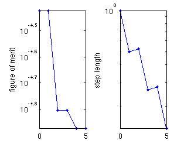

optimize_2D_multimode_example.
Example of the optimization of multiple eigenmodes.
Contents
Description
This script varies the horizontal position of the holes of a beam resonator in order to match multiple resonance frequencies.
% Make this a function instead of a script to allow for nested function definitions. function [] = optimize_2D_multimode_example()
Simple specification of the optimization problem
- omega is the frequency used to obtain the initial guess.
- target_omega is the desired value of the real part of eigenfrequency.
- target_kappa is the desired value of the imaginary part of eigenfrequency.
- polarization is the polarization component at the center of the resonator.
We later use my_mode to make these more detailed.
spec(1) = struct( 'omega', 0.13, ... 'target_omega', 0.13, ... 'target_kappa', 0, ... 'polarization', 2); spec(2) = struct( 'omega', 0.22, ... 'target_omega', 0.22, ... 'target_kappa', 0, ... 'polarization', 2); spec(3) = struct( 'omega', 0.16, ... 'target_omega', 0.16, ... 'target_kappa', 0, ... 'polarization', 3);
Initialize structure
dims = [200 40 1]; % Size of the simulation. make_structure = @(p) my_structure(dims, p); % Function handle to create structure from parameters. lattice_spacing = 12; p = lattice_spacing * [1:1:6]'; % Starting structure parameters. epsilon_init = make_structure(p);
Create the detailed specification
This specification includes running a simulation to obtain the initial guess.
for k = 1 : length(spec) modes(k) = my_mode( dims, ... spec(k).omega, ... spec(k).target_omega, ... spec(k).target_kappa, ... spec(k).polarization, ... make_structure, ... epsilon_init); end
Optimize!
The results below show that the frequencies have mostly converged to their targets.
max_iters = 5;
optimize_modes(modes, p, dims, @(x) false, max_iters, @my_simulate, @(p, v) vis_progress(dims, [spec.polarization], p, v));
0: 3.784e-05 (0.134, 8.17e+03) (0.222, 9.69e+02) (0.163, 2.85e+02) [12.00 24.00 36.00 48.00 60.00 72.00] 1: 3.784e-05 (0.134, 8.17e+03) (0.222, 9.69e+02) (0.163, 2.85e+02) [12.00 24.00 36.00 48.00 60.00 72.00] 2: 1.566e-05 (0.130, 9.23e+03) (0.220, 1.90e+03) (0.162, 2.78e+02) [12.50 24.27 36.09 47.99 59.99 72.01] 3: 1.566e-05 (0.130, 9.23e+03) (0.220, 1.90e+03) (0.162, 2.78e+02) [12.50 24.27 36.09 47.99 59.99 72.01] 4: 1.339e-05 (0.130, 9.31e+03) (0.221, 1.40e+03) (0.160, 3.10e+02) [12.51 24.54 36.28 47.83 59.98 72.06] 5: 1.339e-05 (0.130, 9.31e+03) (0.221, 1.40e+03) (0.160, 3.10e+02) [12.51 24.54 36.28 47.83 59.98 72.06]
end
Source code for private functions
function [epsilon] = my_structure(dims, hole_y_pos) % Private function to create a photonic crystal beam structure. % First create the beam surrounded by air. my_shapes = {struct('type', 'rectangle', ... 'position', [0 0], ... 'size', [1e9 1e9], ... 'permittivity', 1), ... struct('type', 'rectangle', ... 'position', [0 0], ... 'size', [1e9 12], ... 'permittivity', 12.25)}; hole_radius = 4; % Hard-coded in (for now atleast). % Create symmetric hole patterns around the center of the cavity. for k = 1 : length(hole_y_pos) my_shapes{end+1} = struct('type', 'circle', ... 'position', [hole_y_pos(k) 0], ... 'radius', hole_radius, ... 'permittivity', 1); my_shapes{end+1} = struct('type', 'circle', ... 'position', [-hole_y_pos(k) 0], ... 'radius', hole_radius, ... 'permittivity', 1); end % "Capping" layer to prevent holes from entering PML. for k = [-1, 1] my_shapes{end+1} = struct('type', 'rectangle', ... 'position', [k*dims(1)/2 0], ... 'size', [20 2*hole_radius+1], ... 'permittivity', 12.25); end epsilon = {ones(dims), ones(dims), ones(dims)}; % Initial value of epsilon. % Actually create the structure. epsilon = add_planar(epsilon, 1e9, 1, my_shapes); end function [mode] = my_mode(dims, omega, omega_target, imag_omega_target, pol, make_structure, epsilon) % Create the detailed specification. [s_prim, s_dual] = stretched_coordinates(omega_target + 1i * imag_omega_target, dims, [10 10 0]); % s-parameters. J = {zeros(dims), zeros(dims), zeros(dims)}; J{pol}(dims(1)/2 + 1, dims(2)/2, 1) = 1; % Central current source, mu = {ones(dims), ones(dims), ones(dims)}; % Permeability. v_guess = my_simulate(omega, s_prim, s_dual, mu, epsilon, J); % Simulate to get the guess. mode = struct( 'tr', omega_target, ... 'ti', imag_omega_target, ... 'v_init', v_guess, ... 's_prim', {s_prim}, ... 's_dual', {s_dual}, ... 'mu', {mu}, ... 'eig_vis', @(lambda, v) eig_vis(dims, pol, lambda, v), ... 'make_structure', make_structure); end function [x] = my_simulate(omega, s_prim, s_dual, mu, epsilon, J) % Private function to simulate. Used to get initial guess. % Get matrices. [A1, A2, m, e, b] = maxwell_matrices(omega, s_prim, s_dual, mu, epsilon, J); % Solve. my_diag = @(z) spdiags(z(:), 0, numel(z), numel(z)); x = (A1 * my_diag(m.^-1) * A2 - omega^2 * my_diag(e)) \ b; end function eig_vis(dims, pol, lambda, v) % Visualization function for the eigenmode solve. subplot 211; n = prod(dims); unvec = @(z) {reshape(z(1:n), dims), reshape(z(n+1:2*n), dims), reshape(z(2*n+1:3*n), dims)}; F = unvec(v); imagesc(abs(F{pol})'); axis equal tight; title('F-field of mode'); subplot 212; end function vis_progress(dims, pol, p, v) % Displays the current eigenmodes and structure. N = length(v); n = prod(dims); unvec = @(z) {reshape(z(1:n), dims), reshape(z(n+1:2*n), dims), reshape(z(2*n+1:3*n), dims)}; function my_plot(img_data, ind, ytext) subplot(N+1, 1, ind); imagesc(abs(img_data)'); axis equal tight; ylabel(ytext); end epsilon = my_structure(dims, p); my_plot(epsilon{3}, 1, 'structure'); for k = 1 : N E = unvec(v{k}); my_plot(E{pol(k)}, k+1, ['mode ', num2str(k)]); end end